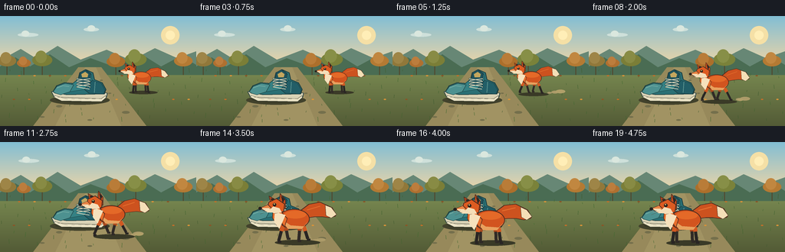
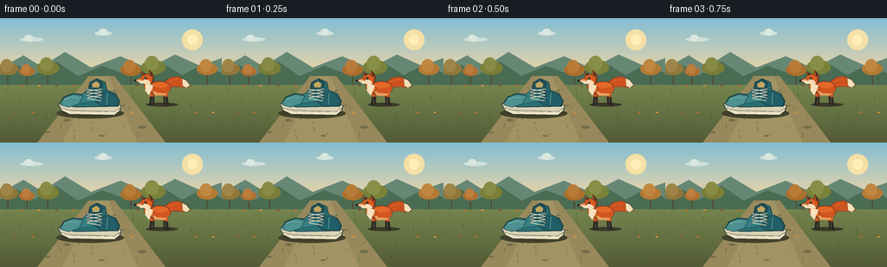

CODING AGENTS AS PIXEL WORLD MODELS
traex/GPT-5.6-Sol · dynamic_spatial_relationship_0030
点击播放 · 原生 RGB 像素
逐轮保存的候选
回放视频、检查图与代码变化。
每份候选均可单独播放。实际图片检查记录在下方工具轨迹中。
候选 01播放与检查图
点击播放 · 原生 RGB 像素


展开代码变化
--- 上一保存版本 +++ 本次保存版本 @@ -0,0 +1,332 @@ +from pathlib import Path +import math + +import numpy as np +from PIL import Image, ImageDraw + +import artifact_io + + +W, H, N = 256, 144, 20 +AA = 4 + + +def _pt(x, y): + return (int(round(x * AA)), int(round(y * AA))) + + +def _box(x0, y0, x1, y1): + return (*_pt(x0, y0), *_pt(x1, y1)) + + +def ellipse(draw, box, fill, outline=None, width=1): + draw.ellipse(_box(*box), fill=fill, outline=outline, width=max(1, int(width * AA))) + + +def polygon(draw, points, fill, outline=None, width=1): + p = [_pt(x, y) for x, y in points] + draw.polygon(p, fill=fill) + if outline: + draw.line(p + [p[0]], fill=outline, width=max(1, int(width * AA)), joint="curve") + + +def line(draw, points, fill, width=1, joint="curve"): + draw.line([_pt(x, y) for x, y in points], fill=fill, + width=max(1, int(width * AA)), joint=joint) + + +def smoothstep(x): + x = max(0.0, min(1.0, x)) + return x * x * (3 - 2 * x) + + +def draw_background(frame_index): + # A still, softly painted autumn clearing makes the depth change easy to read. + yy = np.arange(H * AA)[:, None] + horizon = 67 * AA + sky_top = np.array([130, 190, 212], dtype=float) + sky_low = np.array([241, 214, 165], dtype=float) + ground_top = np.array([122, 139, 82], dtype=float) + ground_low = np.array([83, 91, 54], dtype=float) + rgb = np.empty((H * AA, W * AA, 3), dtype=np.uint8) + for y in range(H * AA): + if y < horizon: + q = y / horizon + c = sky_top * (1 - q) + sky_low * q + else: + q = (y - horizon) / (H * AA - horizon) + c = ground_top * (1 - q) + ground_low * q + rgb[y, :, :] = np.clip(c, 0, 255) + im = Image.fromarray(rgb, "RGB") + d = ImageDraw.Draw(im) + + # Sun halo and drifting high clouds. + ellipse(d, (210, 13, 234, 37), (245, 224, 166)) + ellipse(d, (216, 19, 228, 31), (255, 238, 183)) + cloud_dx = frame_index * 0.10 + for bx, by, bw in [(23 + cloud_dx, 22, 27), (109 + cloud_dx * .5, 15, 20)]: + ellipse(d, (bx, by, bx + bw, by + 5), (206, 224, 218)) + ellipse(d, (bx + 5, by - 3, bx + 15, by + 5), (218, 231, 222)) + + # Layered distant ridges and tree line. + polygon(d, [(0, 58), (27, 43), (48, 56), (75, 39), (105, 57), + (139, 44), (171, 58), (202, 42), (231, 55), (256, 46), (256, 74), (0, 74)], + (103, 135, 117)) + polygon(d, [(0, 66), (20, 54), (39, 66), (65, 50), (90, 67), + (118, 55), (148, 66), (183, 49), (210, 66), (236, 52), (256, 64), (256, 77), (0, 77)], + (74, 108, 83)) + # Individual autumn crowns add a sense of scale. + tree_data = [(9, 58, 12, (145, 120, 58)), (31, 61, 9, (175, 112, 48)), + (55, 57, 13, (123, 126, 55)), (151, 59, 12, (172, 111, 43)), + (177, 56, 14, (122, 130, 58)), (239, 58, 12, (180, 122, 51))] + for x, y, r, col in tree_data: + line(d, [(x, y + 2), (x, 77)], (82, 72, 45), 1.4) + ellipse(d, (x-r, y-r*.55, x+r, y+r*.65), col) + ellipse(d, (x-r*.7, y-r*.9, x+r*.45, y+r*.35), tuple(min(255, v+13) for v in col)) + + # Pale path broadens toward the camera: a strong foreground/depth cue. + polygon(d, [(102, 67), (132, 67), (191, 144), (43, 144)], (151, 137, 91)) + polygon(d, [(111, 67), (125, 67), (158, 144), (72, 144)], (161, 147, 99)) + # Path texture and stationary stones. + for x, y, rx in [(106, 77, 2), (132, 84, 2), (77, 118, 4), (164, 126, 5), + (117, 136, 3), (143, 101, 2), (55, 132, 3)]: + ellipse(d, (x-rx, y-rx*.35, x+rx, y+rx*.35), (116, 111, 76)) + + # Fine grass blades. Their positions stay fixed across frames. + for k in range(58): + x = (k * 47 + 13) % 256 + y = 72 + ((k * 29) % 68) + if 96 < x < 145 and y < 110: + continue + h = 2 + (k % 5) + sway = math.sin(k * 1.7 + frame_index * .16) * .6 + col = (65, 91 + (k % 3) * 7, 48) + line(d, [(x, y), (x + sway, y - h)], col, .65) + # Scattered warm leaves. + for k in range(17): + x = (k * 67 + 21) % 248 + 4 + y = 78 + ((k * 31) % 62) + col = [(194, 111, 42), (218, 147, 56), (139, 84, 38)][k % 3] + ellipse(d, (x-1.5, y-.7, x+1.5, y+.7), col) + return im + + +def draw_shoe(im): + """A detailed teal canvas sneaker, fixed in the middle distance.""" + d = ImageDraw.Draw(im) + # Cast shadow establishes contact with the ground. + ellipse(d, (65, 104, 143, 116), (66, 66, 44)) + ellipse(d, (72, 106, 137, 113), (58, 59, 40)) + # Rubber sole, with the toe pointing left. + polygon(d, [(67, 99), (70, 105), (79, 110), (130, 111), (139, 106), + (140, 101), (131, 99), (84, 98)], (218, 211, 182), (43, 65, 64), 1.1) + polygon(d, [(72, 104), (82, 107), (132, 108), (138, 104), (138, 107), + (132, 112), (80, 111), (70, 106)], (236, 228, 198), (70, 77, 66), .7) + line(d, [(75, 106), (132, 108), (138, 104)], (139, 133, 111), .8) + + # Canvas upper and heel quarter. + polygon(d, [(69, 99), (74, 91), (84, 87), (96, 88), (102, 82), + (104, 74), (112, 70), (121, 74), (123, 83), (133, 87), + (138, 96), (136, 102), (87, 103), (76, 101)], + (42, 112, 117), (28, 59, 61), 1.2) + # Teal fabric panels. + polygon(d, [(101, 83), (105, 75), (112, 72), (119, 76), (120, 86), + (110, 96), (91, 99), (83, 94), (94, 89)], + (53, 129, 132), (30, 77, 78), .8) + polygon(d, [(120, 84), (132, 88), (137, 97), (135, 102), (116, 101), + (110, 96)], (34, 94, 103), (27, 65, 69), .8) + # Toe cap and subtle highlight. + polygon(d, [(69, 99), (74, 92), (85, 88), (96, 90), (91, 99), (79, 103), (72, 101)], + (77, 145, 144), (31, 70, 70), .8) + line(d, [(74, 94), (82, 91), (90, 92)], (117, 173, 165), 1.0) + # Tongue. + polygon(d, [(101, 90), (104, 74), (111, 70), (118, 75), (117, 92)], + (31, 82, 91), (25, 57, 64), .8) + polygon(d, [(106, 76), (111, 73), (115, 76), (114, 80), (107, 80)], (196, 166, 94)) + # Eyelets and pale crisscrossed laces. + for j in range(4): + y = 82 + j * 3.6 + ellipse(d, (99.3, y-1, 101.3, y+1), (229, 218, 185), (27, 65, 67), .5) + ellipse(d, (116.0, y-1, 118.0, y+1), (229, 218, 185), (27, 65, 67), .5) + line(d, [(101, y), (116.5, y+2.6)], (235, 224, 192), 1.0) + if j < 3: + line(d, [(117, y), (101, y+2.6)], (235, 224, 192), 1.0) + # Heel seam and sole tread. + line(d, [(124, 86), (123, 100)], (105, 161, 154), .8) + for x in range(84, 133, 9): + line(d, [(x, 108), (x+4, 108.5)], (150, 143, 119), .7) + + +def local_point(cx, cy, sc, p): + return cx + p[0] * sc, cy + p[1] * sc + + +def lpoly(draw, cx, cy, sc, pts, fill, outline=None, width=1): + polygon(draw, [local_point(cx, cy, sc, p) for p in pts], fill, outline, + max(.45, width * sc)) + + +def lellipse(draw, cx, cy, sc, box, fill, outline=None, width=1): + x0, y0 = local_point(cx, cy, sc, (box[0], box[1])) + x1, y1 = local_point(cx, cy, sc, (box[2], box[3])) + ellipse(draw, (x0, y0, x1, y1), fill, outline, max(.45, width * sc)) + + +def lline(draw, cx, cy, sc, pts, fill, width=1): + line(draw, [local_point(cx, cy, sc, p) for p in pts], fill, + max(.45, width * sc)) + + +def tail_polygon(cx, cy, sc, sway): + # Tapered, full brush-like tail behind the fox. + centers = [(10, -9), (20, -13-sway*.2), (31, -14-sway*.65), + (42, -10-sway), (48, -7-sway*.8)] + radii = [5.0, 7.8, 8.3, 6.0, 1.0] + upper, lower = [], [] + for i, ((x, y), r) in enumerate(zip(centers, radii)): + if i == 0: + dx, dy = centers[1][0]-x, centers[1][1]-y + else: + dx, dy = x-centers[i-1][0], y-centers[i-1][1] + mag = math.hypot(dx, dy) or 1 + nx, ny = -dy/mag, dx/mag + upper.append((cx+(x+nx*r)*sc, cy+(y+ny*r)*sc)) + lower.append((cx+(x-nx*r)*sc, cy+(y-ny*r)*sc)) + return upper + lower[::-1], centers + + +def draw_leg(d, cx, cy, sc, hip, foot_x, foot_y, far=False): + fur = (170, 75, 31) if far else (208, 89, 34) + dark = (48, 42, 38) if far else (41, 37, 35) + hx, hy = hip + knee_x = hx + (foot_x - hx) * .48 + knee_y = 10 + abs(foot_x-hx) * .08 + lline(d, cx, cy, sc, [(hx, hy), (knee_x, knee_y)], fur, 5.0) + lline(d, cx, cy, sc, [(knee_x, knee_y), (foot_x, foot_y-1)], dark, 3.6) + lline(d, cx, cy, sc, [(foot_x-1, foot_y), (foot_x+3, foot_y)], dark, 2.5) + + +def draw_fox(im, cx, ground_y, sc, phase, run_amount, settle, frame_index): + d = ImageDraw.Draw(im) + # Running bounce is zero at the held beginning/end and lively in transit. + bob = -abs(math.sin(phase)) * 2.2 * run_amount + math.sin(frame_index*.9) * .25 * (1-run_amount) + cy = ground_y - 23 * sc + bob + + # Fox shadow grows as it approaches the camera. + ellipse(d, (cx-22*sc, ground_y-3*sc, cx+30*sc, ground_y+3.2*sc), + (58, 58, 39)) + + sway = math.sin(phase + .8) * 3.1 * run_amount + math.sin(frame_index*.35) * 1.2 + tail_pts, centers = tail_polygon(cx, cy, sc, sway) + polygon(d, tail_pts, (205, 82, 31), (77, 45, 31), max(.7, sc*.9)) + # Cream tail tip, layered as a tapered cap. + tip = [(36, -19-sway*.72), (43, -16-sway), (49, -8-sway*.8), + (43, -4-sway*.55), (37, -7-sway*.45)] + lpoly(d, cx, cy, sc, tip, (244, 223, 183), (88, 58, 40), .55) + lline(d, cx, cy, sc, [(15, -14), (30, -18-sway*.45)], (231, 113, 47), 1.1) + + # Gait: diagonal pairs alternate. Far legs first, then near legs. + stride = 7.5 * math.sin(phase) * run_amount + lift1 = max(0, math.cos(phase)) * 5 * run_amount + lift2 = max(0, -math.cos(phase)) * 5 * run_amount + if settle: + stride, lift1, lift2 = 0, 0, 0 + draw_leg(d, cx, cy, sc, (7, 3), 8-stride, 22-lift2, True) + draw_leg(d, cx, cy, sc, (-10, 3), -10+stride, 22-lift1, True) + draw_leg(d, cx, cy, sc, (10, 2), 13+stride, 23-lift1, False) + draw_leg(d, cx, cy, sc, (-12, 2), -15-stride, 23-lift2, False) + + outline = (76, 43, 30) + # Main russet body with warm dorsal highlight and pale underside. + lellipse(d, cx, cy, sc, (-18, -15, 18, 8), (210, 84, 31), outline, 1.0) + lellipse(d, cx, cy, sc, (-11, -13, 14, -4), (228, 105, 40)) + lpoly(d, cx, cy, sc, [(-16, -4), (-4, 4), (11, 5), (16, 0), + (9, 8), (-7, 8)], (232, 161, 94)) + + # Neck ruff makes the animal unmistakably fox-like. + lpoly(d, cx, cy, sc, [(-15, -12), (-24, -17), (-25, -5), (-20, 4), + (-15, 0), (-11, 6), (-8, -4)], + (231, 111, 45), outline, .8) + lpoly(d, cx, cy, sc, [(-22, -12), (-23, 0), (-17, 8), (-13, -1), + (-10, -8)], (246, 225, 188), None) + + # Head in left-facing profile, with tall black-backed ears and white cheek. + lpoly(d, cx, cy, sc, [(-26, -17), (-29, -30), (-22, -26), (-18, -17)], + (190, 74, 29), outline, .8) + lpoly(d, cx, cy, sc, [(-17, -19), (-16, -33), (-10, -25), (-10, -15)], + (200, 76, 28), outline, .8) + lpoly(d, cx, cy, sc, [(-27, -27), (-24, -21), (-23, -27)], (48, 40, 36)) + lpoly(d, cx, cy, sc, [(-15, -30), (-13, -22), (-11, -26)], (48, 40, 36)) + lpoly(d, cx, cy, sc, [(-29, -23), (-20, -27), (-11, -21), (-12, -12), + (-22, -10), (-31, -16)], (220, 91, 33), outline, 1.0) + # Long pointed muzzle. + lpoly(d, cx, cy, sc, [(-30, -20), (-40, -16), (-31, -12), (-22, -12)], + (232, 132, 69), outline, .7) + lpoly(d, cx, cy, sc, [(-37, -16), (-29, -16), (-24, -11), (-31, -11)], + (246, 222, 183)) + lellipse(d, cx, cy, sc, (-41, -17.5, -37, -14), (34, 34, 32), outline, .35) + # White cheek and alert eye. + lpoly(d, cx, cy, sc, [(-24, -18), (-17, -16), (-14, -11), (-23, -10), + (-29, -13)], (244, 222, 184)) + lellipse(d, cx, cy, sc, (-24.5, -22, -20.5, -18), (42, 35, 29)) + lellipse(d, cx, cy, sc, (-23.4, -21.5, -22.1, -20.2), (244, 218, 132)) + # Tiny mouth and whiskers. + lline(d, cx, cy, sc, [(-36, -13), (-31, -12)], (59, 43, 34), .65) + lline(d, cx, cy, sc, [(-33, -14), (-41, -12)], (93, 72, 54), .35) + lline(d, cx, cy, sc, [(-32, -12), (-39, -9)], (93, 72, 54), .35) + + +def draw_dust(im, frame_index, cx, gy, amount): + if amount <= .05 or frame_index < 5: + return + d = ImageDraw.Draw(im) + # Small coherent puffs trail to the right as the fox runs toward the viewer. + for j in range(3): + age = ((frame_index - 5) * .65 + j * 1.7) % 4.5 + x = cx + 24 + age * 3 + j * 2 + y = gy - 2 - age * .5 + r = 2 + age * .65 + col = (167 + j*5, 150 + j*5, 105) + ellipse(d, (x-r*1.5, y-r*.55, x+r*1.5, y+r*.55), col) + + +def make_frame(i): + im = draw_background(i) + draw_shoe(im) + + if i <= 3: + cx, gy, sc = 184.0, 100.0, .72 + phase = 0.0 + run = 0.0 + settle = False + elif i <= 15: + u = (i - 3) / 12.0 + q = smoothstep(u) + # A shallow arc carries the fox from the shoe's right into the foreground. + cx = 184 + (126 - 184) * q + math.sin(math.pi*q) * 5 + gy = 100 + (132 - 100) * q + sc = .72 + (1.14 - .72) * q + phase = (i - 4) * math.pi * .62 + run = math.sin(math.pi * min(1, u)) ** .35 + settle = False + else: + cx, gy, sc = 126.0, 132.0, 1.14 + phase = 0.0 + run = 0.0 + settle = True + + draw_dust(im, i, cx, gy, run) + # Shoe is deliberately rendered before the arriving fox. In the final held + # frames the fox occludes it, clearly showing that the fox is now in front. + draw_fox(im, cx, gy, sc, phase, run, settle, i) + + return np.asarray(im.resize((W, H), Image.Resampling.LANCZOS), dtype=np.uint8) + + +def main(): + frames = np.stack([make_frame(i) for i in range(N)], axis=0) + artifact_io.save(frames, Path(__file__).resolve().parent) + + +if __name__ == "__main__": + main()
可观测工具轨迹
实际执行的命令与返回图片。
命令 1exit 0
/bin/bash -lc "cat prompt.txt && printf '\\n---RULES---\\n' && cat GENERATION_RULES.md && printf '\\n---SPEC---\\n' && cat task_spec.json"
命令 2exit 0
/bin/bash -lc "find . -maxdepth 2 -type f -printf '%p\\n' | sort && printf '\\nTOOLS\\n' && command -v ffmpeg || true && command -v blender || true && command -v python3 || true"
命令 3exit 0
/bin/bash -lc 'cat artifact_io.py'
命令 4exit 0
/bin/bash -lc "python3 generate.py && python3 - <<'PY'
import numpy as np
from PIL import Image
z=np.load('pixels.npz')['pixels']
print('pixels', z.shape,z.dtype,'range',hex(int(z.min())),hex(int(z.max())))
print('frames',len(list(__import__('pathlib').Path('frames').glob('*.png'))))
PY"保存候选 1 份；完成命令 4 次；可验证图片返回 0 张。原始 API 响应与完整日志保留在本地。